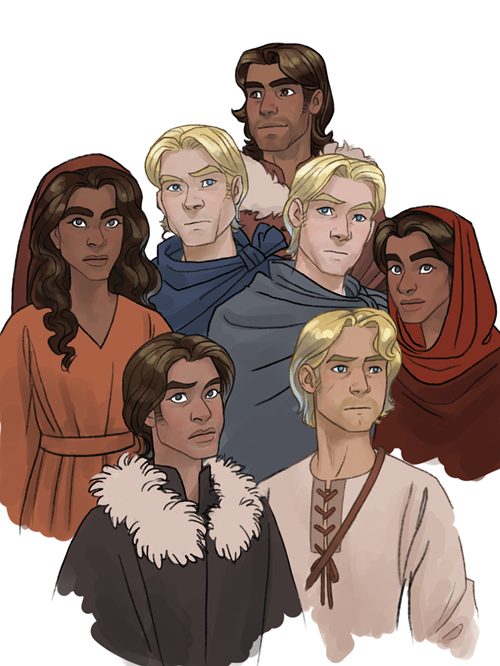

Turin Turambar Animation Project
This is concept art for an animation project centered around the story of Turin in the Silmarillion. It's similar to the Luthien animation project, but much shorter. It would also be non verbal ballet, but the single song is only about a minute and a half. I have some hope that this smaller project is more achievable, and could be a practice run for the other larger one.


